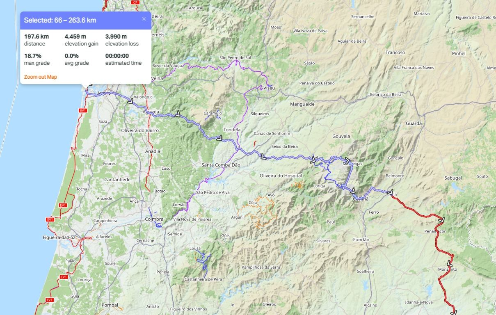

A bikepacking a szabadság, a felfedezés és a saját erőből megtett út élménye. A BP-200KM ezt az életérzést sűríti egy közel 200 kilométeres kihívásba: magad hajtod a kerékpárt, viszed a felszerelésedet, és önellátóan gondoskodsz az élelmedről, a pihenésedről és az útközben felmerülő nehézségek megoldásáról.
A szakaszok GPX-fájljai a „Szakaszok” fül alatt tölthetők le, amint elérhetővé válnak.
A BP-200KM a Trans Europe Ultra útvonalához kapcsolódó, saját erőből és önellátóan teljesítendő bikepacking kihívás. A résztvevők minden országban a Trans Europe Ultra – Part 1 hivatalos, kötött GPX-nyomvonalának egy kijelölt, pontosan ~200 km-es szakaszát teljesíthetik, amely magában foglalja az adott nemzet legmagasabban kerékpározható csúcsát vagy hágóját.
Műfaj: 2 napos, kemény kihívás (Gran Fondo / Ultra-Stage formátumban), önellátó vagy fél-önellátó rendszerben.
Minden nemzeti szakasz logisztikailag kényelmes, önellátó hétvégi bikepacking kalandként teljesíthető:
Időzítés és regisztrációs díj: a fő versenytől függetlenül, bármikor teljesíthető – indulás a regisztráció után, a 2027-es főverseny rajtja után lehetséges. A regisztrációs díj: 65€.
A kezdeményezést önerőből, külső támogatók nélkül indítjuk, ezért a részszakaszok teljesítésének nyilvántartását csak megfelelő érdeklődés és a program sikeres elindulása esetén tudjuk kialakítani és elindítani. A regisztráló a jelentkezésével elfogadja, hogy amennyiben a program nem indul el sikeresen, a befizetett regisztrációs díjat nem térítjük vissza, hanem a weboldal fenntartására és karbantartására fordítjuk.
| Teljesített szakaszok | Fokozat / titulus | Fizikai díj és elismerés |
|---|---|---|
| 1 szakasz (~200 km) | Stage Finisher | Névre szóló oklevél |
| 3 szakasz (~600 km) | TEU Trilogy Finisher (Bronz) | Bronz Trilogy érem, szőtt mez-felvarró, „3-Star” Passport-pecsét |
| 6 szakasz (~1.200 km) | Half-Way Climber (Ezüst) | Ezüst érem, egyedi TEU Challenge kerékpáros mez (limitált kiadás) |
| 9 szakasz (~1.800 km) | Master Explorer (Arany) | Arany érem, + VIP rajtjogosultság |
| 12 szakasz (~2.400 km) | TEU Grandmaster (Gyémánt) | A főversennyel egyenértékű Grandmaster trófea, örökös rajtszám-visszavonás és ingyenes nevezés a főversenyre |
